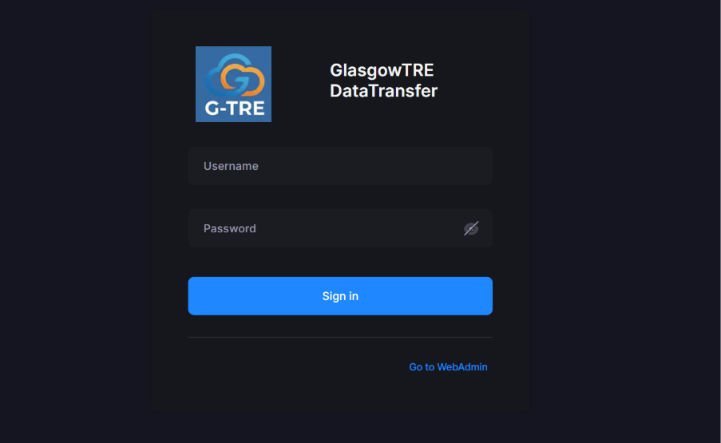
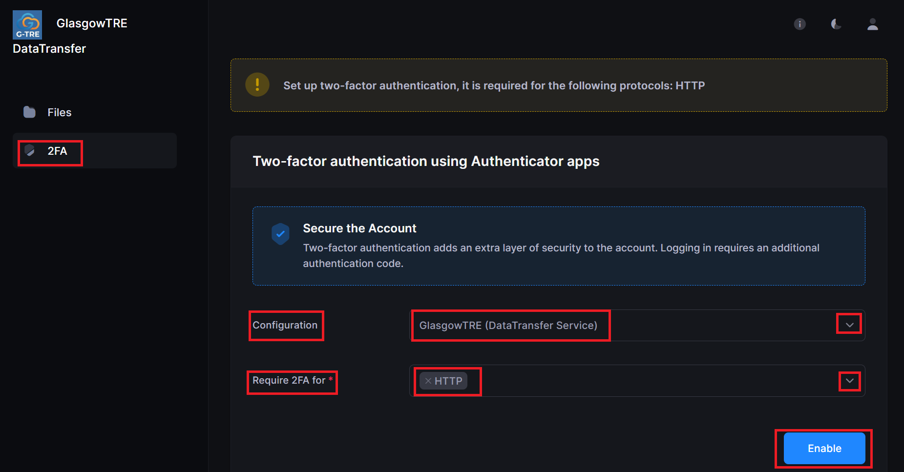
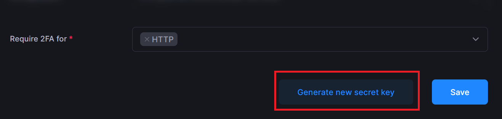
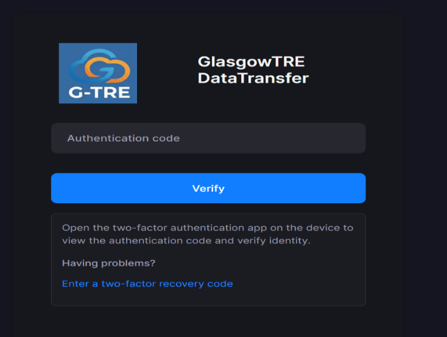
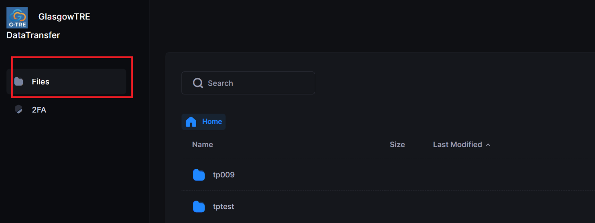
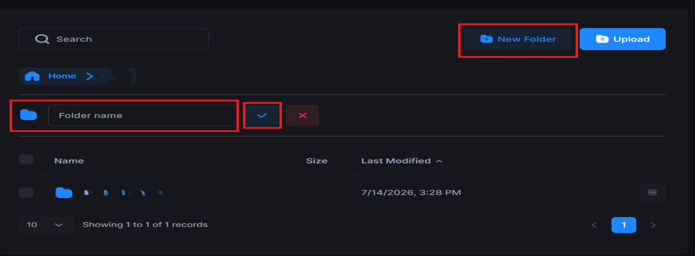
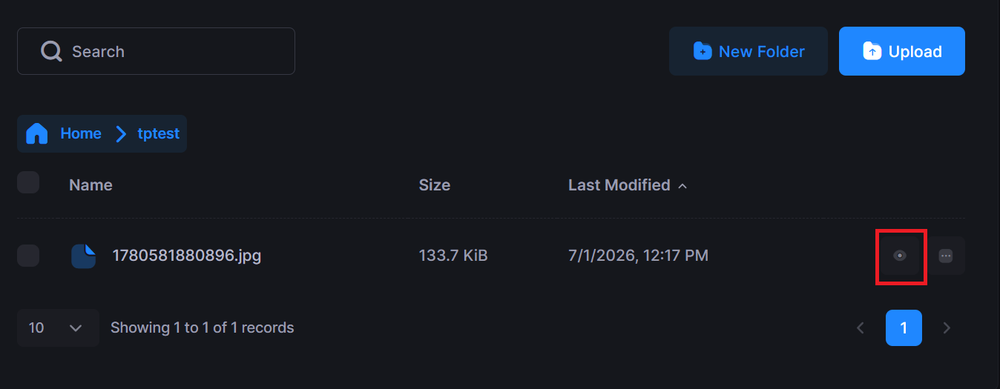
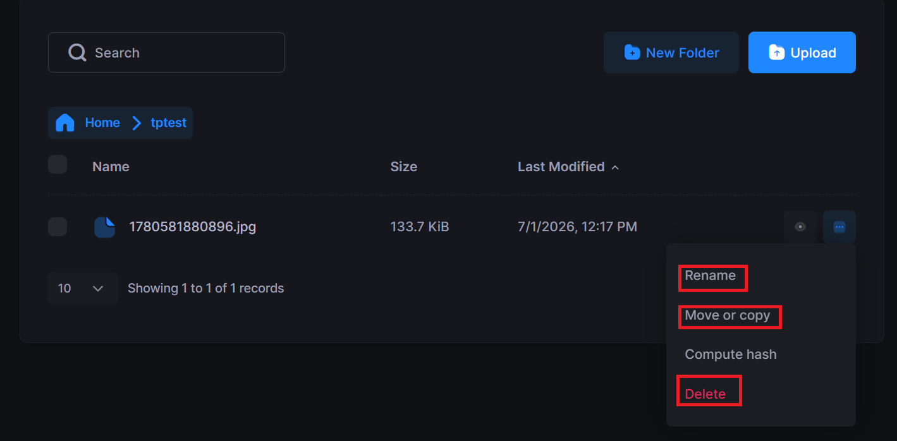
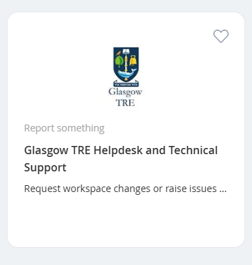

How to use GlasgowTRE secure web file transfer service¶
Objective¶
Use this guide to sign in to the Glasgow TRE secure transfer service, complete first-time two-factor authentication setup, and begin managing files.
Before you begin¶
Make sure you have:
- Your username from the welcome email.
- Your password from the separate communication channel.
- A mobile device with an authenticator app such as Microsoft Authenticator.
- A working internet connection and access to the service URL.
Self-service password changes are not available. If you forget your password or cannot sign in, contact the helpdesk instead of trying to bypass the security process.
Step 1: Open the service¶
- Open the service URL: http://sftp.glasgowtre.ac.uk/
- Enter your username and password.
- Select Sign In.
- TEST TEST TEST

Step 2: Complete first-time two-factor authentication setup¶
On your first successful sign in, you will be asked to configure two-factor authentication.
- Open the Configuration section.
- In the service dropdown, choose GlasgowTRE (DataTransfer Service).
- In the Require 2FA dropdown, choose HTTP.
- Select Enable.

- Scan the QR code with your authenticator app.
- If the QR code cannot be scanned, use the manual entry option instead:
- Open the authenticator app.
- Choose Add account.
- Select Enter code manually.
- Choose Other (Google, Facebook, etc.)
- Enter an account name such as Glasgow TRE and the secret key shown on screen.

- Enter the current six-digit code from the authenticator app into the Authentication Code field immediately.

Codes are time-based and expire every 30 seconds, so enter the latest code as soon as it appears.
Step 3: Sign in on later sessions¶
For future visits:
- Return to the same service URL.
- Enter your username and password.
- Enter the six-digit code from the GlasgowTRE (DataTransfer Service) entry in your authenticator app.
- Confirm that you reach the Files view.

Step 4: Upload and manage files¶
Once you are signed in:
- Open the Files section.
- Create a new folder if needed by selecting New Folder and giving it a name.

- Upload files by dragging them into the upload area or using Browse folder.
- Use Preview, Rename, Move, Copy, or Delete as needed.


Step 5: End the session securely¶
- Select the profile icon in the top-right corner.
- Choose Sign Out.
- Confirm that you are returned to the sign-in screen.
If you need help¶
If you are unable to sign in, cannot use the authenticator app, or need a password reset, contact the UofG Helpdesk through the service catalogue and select the Data (incl. Data ingress/extraction) category. You can also contact the team directly at tre@glasgow.ac.uk.
